Jmr can read the database table and view to transform the model.
Just do 2 steps: 1.Configure the database connection. 2.Transform a table or view to model.
First, open the Jmr file, select the Model page, and click the new button on the menu. Or in the Model List right key, New Group.
Enter a group name, such as: model.

The right side of the page configuration, current support from the Database, Java Class, Xml File transform model.
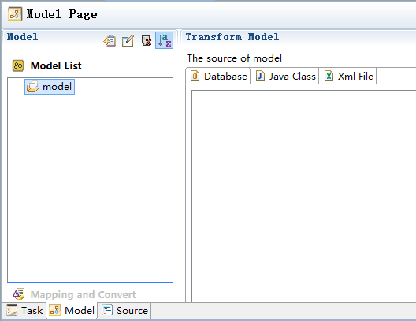
In the model page, store the information of the database, and transform the table or view to model.
Select any model group, in the detail page, select the "database", click right menu "New Connection".
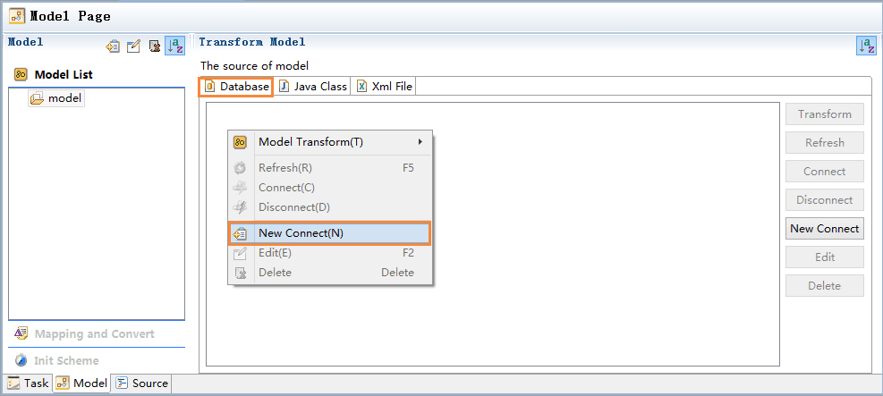
Configure database connection information.
Tips: 1.The optional "Database" contains most of the major databases, if the database is not in the list, select Other. 2.General database will provide jdbc driver, only one normal, but sqlserver2000 contains 3, please all join. 3.The recommended driver is placed under the project path. 4.According to the jdbc agreement, "Classname" may have multiple, please choose the right use. 5.Test the database connection, if there is an error will be prompted, the error is generally a configuration error, the database is not installed or service is not started.

After the configuration is completed, right menu click "Connect".
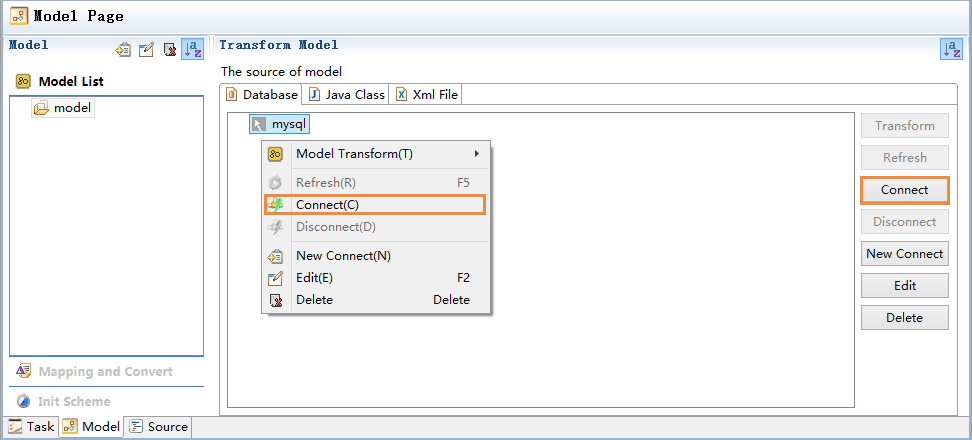
When the connection is successful, the structure of the table and view is displayed. If the database changes, right menu click "Refresh"
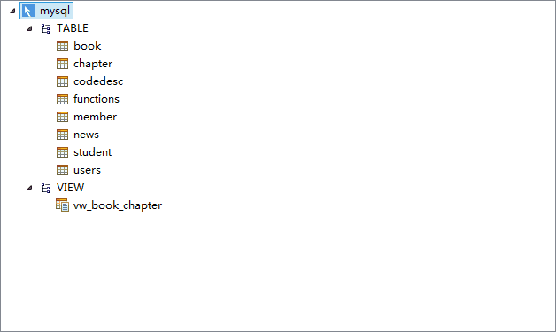
The model is the information of the data source, and we pass it to the template to generate the code.
Now start transforming table and view to model that Jmr can understand and extend.
Select the table or view, right-click menu --> Model Transform --> Default.

The model book is generated, which is the structure of a table or view.
The default transform is the base model, and we usually extend the model on this basis.

There are 2 tables in the database, Their relation as follows.
book: id is the primary key, including name, type, regist_time and other fields. chapter: id is the primary key, including name and book_id fields, where book_id is a foreign key, pointing to the book id.
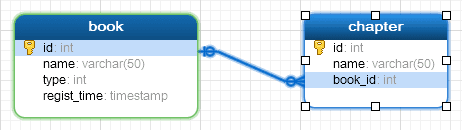
The transform structure contains 4 groups:
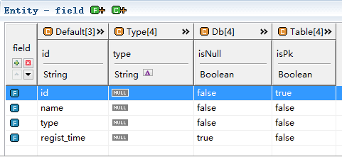
Click to open each group;
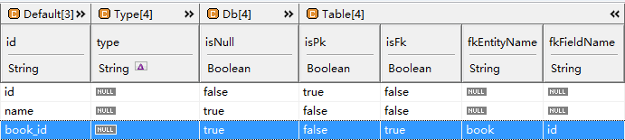
There is a view in the database, which is an join query between the book table and the chapter table.
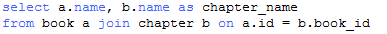
We transform the view to model.
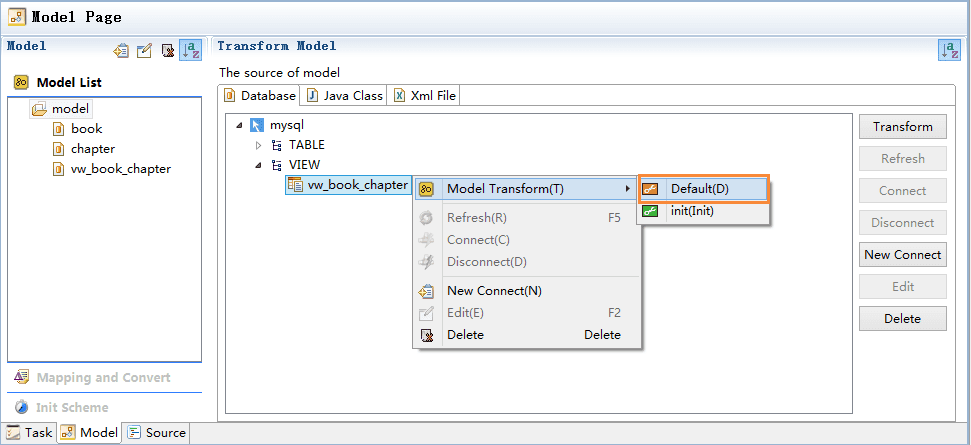
It query the resulting structure is a model containing 2 fields name and chapter_name.
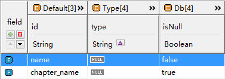
The transform structure contains 3 groups:
After transform model, according to business needs, It is possible to modify the model.
For example, according to business needs, we need to modify or add the contents of the model.
We can set the init scheme
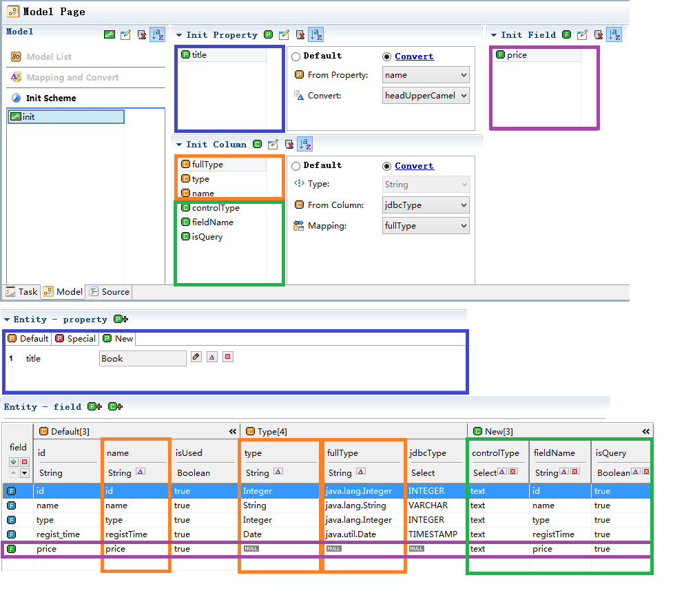
When transform to model, select the init scheme.
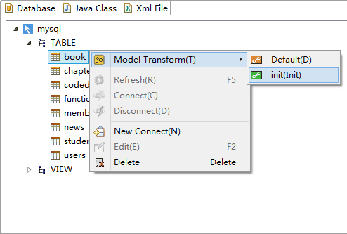
How to use of the init scheme, please refer to the following